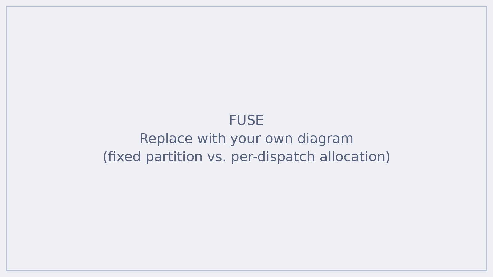

FUSE: Fine-Grained Unified Stage Execution for Multimodal LLM Serving on Wafer-Scale Chips
A multimodal request passes through encode, prefill and decode, and the mix of requests changes from minute to minute. FUSE decides, online and per dispatch, how much of the wafer each stage gets and where it runs, so deadlines are met as the workload shifts.


The problem
Serving a multimodal model means running three very different stages for every request. Encode turns an image or video into tokens, prefill processes the whole prompt at once, and decode generates the answer one token at a time. Each stage stresses the hardware differently, and each is judged by a different deadline: time to first token (TTFT) for the front of the pipeline, time per output token (TPOT) for decode.
On a wafer-scale chip, the usual answer is to split the cores into fixed encode, prefill and decode partitions ahead of time, in the style of disaggregated serving. That works only while the request mix stays close to what the split was tuned for. When more image-heavy requests arrive, the encode partition becomes the bottleneck while decode cores sit idle, and the reverse happens when prompts are text-heavy.
Schedulers built for GPU clusters do not fix this. They allocate work at the granularity of a whole device, so they cannot use what makes a wafer different: allocation per core, and high-bandwidth die-to-die (D2D) links between neighboring regions of the wafer.
The approach
FUSE is an online, deadline-driven orchestrator. Instead of fixing partitions offline, it sizes and places every dispatch at runtime, using three mechanisms:
- Deadline-proportional encode and prefill budgeting. Encode and prefill budgets are set in proportion to request deadlines.
- Quantum-bounded dispatch sizing. Work is issued in bounded quanta, so dispatch sizes stay controlled as the load shifts.
- Co-location-aware decode placement. Decode placement takes co-location into account, with die-to-die bandwidth in mind.
Results
Against vLLM on 16 A100 GPUs, FUSE reaches 7.9× lower TPOT and 3.0× lower end-to-end latency.